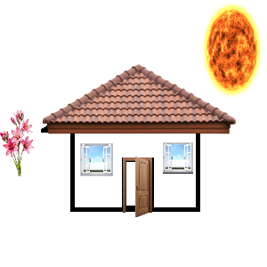
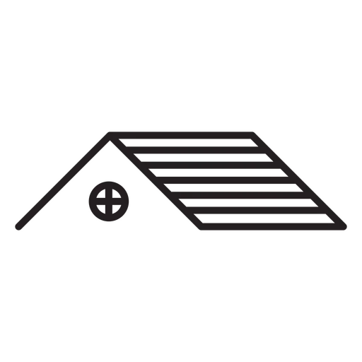

Lehel on kasutatud map area käsud
Palun kliki hiirega erinevale alale pildil

Katus
Katus on ehitise ülemine osa, mis koosneb eri materjalidest ja konstruktsioonilistest elementidest ning toetub ehitise seintele ja tugedele.

Tagasi kodulehele